![]()
library(easyRasch) # only available on github
library(iarm)
library(eRm)
library(mirt)
library(tidyverse)
library(brms)
library(loo)
options(mc.cores = 8)
set.seed(92756246)
library(priorsense)
library(tidybayes)
library(easyRaschBayes)
library(haven)
select <- dplyr::select
count <- dplyr::count
rename <- dplyr::renameRasch analysis with Bayesian and frequentist methods
A comparison using NHANES data for PHQ-9
1 Introduction
This is an example Rasch analysis using frequentist methods and their Bayesian counterparts, as implemented in the easyRaschBayes R package. The frequentist methods are used through the easyRasch package, which is mostly a wrapper package except for some bootstrap/simulation functions (see also Johansson 2025). As such, the sections above will highlight which R package contains the frequentist function. For a more extensive discussion on the metrics and their interpretation, see the easyRasch vignette.
2 Importing data
Data files manually downloaded from September 2024 NHANES data website. As the dataset is quite large with 6337 observations, we will select a subsample of n = 750 with complete responses to all 9 items of the PHQ-9 and a reasonable amount (10%) of respondents with all zeroes.
d_all <- read_xpt("data/DPQ_L_2024_nhanes.xpt")
d_sub <- d_all[2:10] %>%
mutate(across(everything(), ~ car::recode(.x, "4:9=NA"))) %>% #only responses 0-3 are valid
na.omit() %>%
set_names(paste0("q",1:9)) %>%
mutate(sumscore = rowSums(.))
d_sub %>%
summarise(mean(sumscore == 0)) # 24.3%
d_zero <- d_sub %>%
filter(sumscore == 0) %>%
slice_sample(n = 75)
d <- d_sub %>%
filter(sumscore > 0) %>%
slice_sample(n = 675) %>%
bind_rows(d_zero) %>%
select(!sumscore)
saveRDS(d, "data/phq9_nhanes2024_subsample.rds")# A tibble: 6 × 9
q1 q2 q3 q4 q5 q6 q7 q8 q9
<dbl> <dbl> <dbl> <dbl> <dbl> <dbl> <dbl> <dbl> <dbl>
1 1 0 0 1 2 1 0 0 0
2 1 2 3 1 0 1 1 0 1
3 0 1 0 1 0 3 0 0 0
4 0 0 1 1 1 0 0 0 0
5 1 2 2 1 3 3 1 0 0
6 0 0 2 1 0 0 0 0 0All PHQ-9 questions/items are introduced with the phrase
Over the last 2 weeks, how often have you been bothered by the following problems
All items have the same ordinal response categories:
- “Not at all”
- “Several days”
- “More than half the days”
- “Nearly every day”
We’ll set up vectors for item and response category labels for later use in plots, etc.
item_desc <- c(
"Little interest or pleasure in doing things",
"Feeling down, depressed, or hopeless",
"Trouble falling or staying asleep, or sleeping too much",
"Feeling tired or having little energy", "Poor appetite or overeating",
"Feeling bad about yourself - or that you are a failure or have let yourself or your family down",
"Trouble concentrating on things, such as reading the newspaper or watching television",
"Moving or speaking so slowly that other people could have noticed?",
"Thoughts that you would be better off dead or of hurting yourself in some way"
)
item_resp <- c("Not at all","Several days","More than \nhalf the days","Nearly every day")3 Response distributions
Using functions from easyRaschBayes with the wide format dataset.
plot_bars(d, text_y = 10, category_labels = item_resp)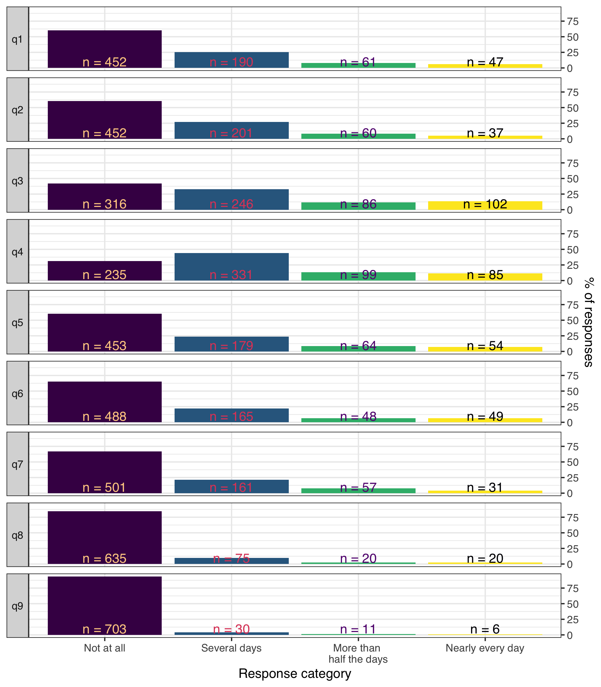
plot_stackedbars(d, text_size = 4.5, category_labels = item_resp) +
theme_minimal(base_size = 14)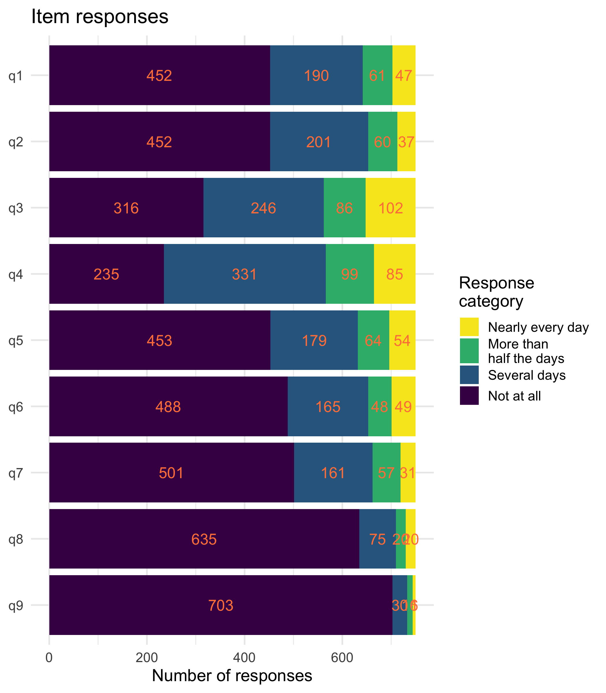
plot_tile(d, category_labels = item_resp,
item_labels = str_wrap(item_desc,24)) +
theme_minimal(base_size = 13)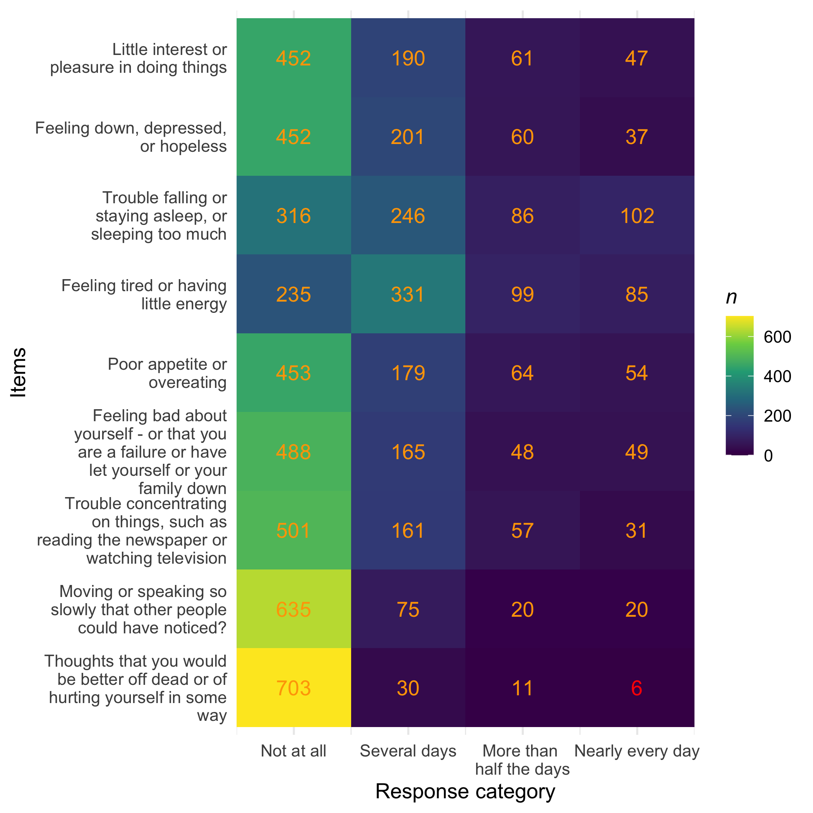
Low frequency use of upper categories of item 9, which is expected in this normal population sample, even if we manipulated the sampling a bit to minimize the floor effects.
4 Fit brms model
For brms, we need data in long format and with the lowest category coded as 1.
dl <- d %>%
mutate(across(everything(), ~ .x + 1)) %>%
rownames_to_column("id") %>%
pivot_longer(!id,
names_to = "item",
values_to = "response")Now we can fit a Rasch partial credit model (PCM) with a weakly informative prior.
prior_pcm <- prior(normal(0, 3), class = "Intercept") +
prior(normal(0, 3), class = "sd", group = "id")
fit <- brm(
response | thres(gr = item) ~ 1 + (1 | id),
data = dl,
family = acat("logit"),
prior = prior_pcm,
chains = 4,
cores = 4,
iter = 4000,
warmup = 1500,
save_pars = save_pars(all = TRUE)
)
saveRDS(fit,"data/phq9fit.rds")The model took about 175s to fit on my Macbook Pro with M4 Max chip.
fit <- readRDS("data/phq9fit.rds")
5 brms model fit
First, we’ll run some basic diagnostics for the model.
summary(fit) # review Rhat and ESS metrics Family: acat
Links: mu = logit
Formula: response | thres(gr = item) ~ 1 + (1 | id)
Data: dl (Number of observations: 6750)
Draws: 4 chains, each with iter = 4000; warmup = 1500; thin = 1;
total post-warmup draws = 10000
Multilevel Hyperparameters:
~id (Number of levels: 750)
Estimate Est.Error l-95% CI u-95% CI Rhat Bulk_ESS Tail_ESS
sd(Intercept) 1.22 0.05 1.12 1.32 1.00 2065 3621
Regression Coefficients:
Estimate Est.Error l-95% CI u-95% CI Rhat Bulk_ESS Tail_ESS
Intercept[q1,1] 0.82 0.10 0.62 1.02 1.00 4323 6517
Intercept[q1,2] 1.94 0.16 1.63 2.26 1.00 5810 7128
Intercept[q1,3] 1.77 0.22 1.35 2.19 1.00 7731 7474
Intercept[q2,1] 0.78 0.10 0.57 0.98 1.00 4524 6036
Intercept[q2,2] 2.06 0.16 1.74 2.39 1.00 6146 7100
Intercept[q2,3] 2.05 0.23 1.61 2.51 1.00 7793 7516
Intercept[q3,1] -0.09 0.11 -0.30 0.11 1.00 4710 6190
Intercept[q3,2] 1.51 0.14 1.23 1.78 1.00 5170 7020
Intercept[q3,3] 0.99 0.17 0.66 1.32 1.00 6108 7198
Intercept[q4,1] -0.80 0.11 -1.00 -0.59 1.00 5021 6854
Intercept[q4,2] 1.61 0.13 1.36 1.88 1.00 5418 5959
Intercept[q4,3] 1.33 0.17 1.00 1.66 1.00 5835 6915
Intercept[q5,1] 0.87 0.11 0.66 1.07 1.00 4818 6244
Intercept[q5,2] 1.81 0.16 1.50 2.12 1.00 5973 7352
Intercept[q5,3] 1.63 0.21 1.23 2.04 1.00 7603 7620
Intercept[q6,1] 1.10 0.11 0.89 1.31 1.00 4923 6316
Intercept[q6,2] 2.10 0.18 1.75 2.46 1.00 6420 7535
Intercept[q6,3] 1.52 0.23 1.07 1.96 1.00 7760 7072
Intercept[q7,1] 1.19 0.11 0.98 1.40 1.00 4709 5983
Intercept[q7,2] 1.97 0.17 1.64 2.31 1.00 6764 6924
Intercept[q7,3] 2.25 0.24 1.78 2.74 1.00 7957 6948
Intercept[q8,1] 2.47 0.14 2.21 2.74 1.00 5012 6183
Intercept[q8,2] 2.60 0.27 2.09 3.13 1.00 7457 7318
Intercept[q8,3] 1.94 0.33 1.30 2.61 1.00 7689 7316
Intercept[q9,1] 3.68 0.20 3.31 4.09 1.00 7203 7379
Intercept[q9,2] 2.59 0.36 1.91 3.32 1.00 7234 7018
Intercept[q9,3] 2.88 0.54 1.88 3.97 1.00 8877 7277
Further Distributional Parameters:
Estimate Est.Error l-95% CI u-95% CI Rhat Bulk_ESS Tail_ESS
disc 1.00 0.00 1.00 1.00 NA NA NA
Draws were sampled using sampling(NUTS). For each parameter, Bulk_ESS
and Tail_ESS are effective sample size measures, and Rhat is the potential
scale reduction factor on split chains (at convergence, Rhat = 1).fit <- add_criterion(fit, criterion = "loo")
powerscale_sensitivity(fit, get_variables(fit)[1:28])Sensitivity based on cjs_dist
Prior selection: all priors
Likelihood selection: all data
variable prior likelihood diagnosis
b_Intercept[q1,1] 0.014 0.103 -
b_Intercept[q1,2] 0.016 0.332 -
b_Intercept[q1,3] 0.018 0.413 -
b_Intercept[q2,1] 0.014 0.078 -
b_Intercept[q2,2] 0.017 0.360 -
b_Intercept[q2,3] 0.019 0.274 -
b_Intercept[q3,1] 0.009 0.164 -
b_Intercept[q3,2] 0.016 0.225 -
b_Intercept[q3,3] 0.019 0.446 -
b_Intercept[q4,1] 0.007 0.311 -
b_Intercept[q4,2] 0.016 0.216 -
b_Intercept[q4,3] 0.018 0.427 -
b_Intercept[q5,1] 0.013 0.097 -
b_Intercept[q5,2] 0.016 0.362 -
b_Intercept[q5,3] 0.019 0.378 -
b_Intercept[q6,1] 0.015 0.078 -
b_Intercept[q6,2] 0.018 0.301 -
b_Intercept[q6,3] 0.016 0.369 -
b_Intercept[q7,1] 0.014 0.145 -
b_Intercept[q7,2] 0.017 0.333 -
b_Intercept[q7,3] 0.020 0.381 -
b_Intercept[q8,1] 0.016 0.255 -
b_Intercept[q8,2] 0.017 0.313 -
b_Intercept[q8,3] 0.017 0.290 -
b_Intercept[q9,1] 0.018 0.201 -
b_Intercept[q9,2] 0.012 0.245 -
b_Intercept[q9,3] 0.024 0.279 -
sd_id__Intercept 0.023 1.053 -There are some posterior predictive checks that could be run as well, using pp_check(). A recent preprint has some pp-checks that seem highly relevant but AFAIK has not been implemented in the bayesplot package yet. The same paper also critiques the usefulness of pp_check(type = "bars") (Säilynoja et al. 2025).
6 Rasch analysis
For this example, I have opted to use 2000 draws available from the brmsfit object. It takes quite a bit of time to extract and compute a large number of draws for the various functions. I would suggest to use 1000 draws for a casual first analysis, and probably 4000+ for a publication ready analysis. This is just based on small scale experimenting, so feel free to run a simulation study if you want hard evidence, or rely on Kruschke’s recommendation to have an ESS (effective sample size) of at least 10 000 draws (Kruschke 2018) to be on the safe side.
6.1 Conditional item infit
See Müller (2020) and Johansson (2025) for more details on this metric and particularly Müller on why the traditional unconditional item fit should not be used with sample sizes above 200. The easyRasch package uses parametric bootstrap to determine adaptive cutoff values for every item.
The Bayesian model doesn’t need bootstrap, since we can get expected and observed values directly from the model fit object.
| Item | InfitMSQ | Infit thresholds | Infit diff | Relative location |
|---|---|---|---|---|
| q1 | 0.942 | [0.819, 1.145] | no misfit | 1.47 |
| q2 | 0.713 | [0.866, 1.136] | 0.153 | 1.59 |
| q3 | 1.384 | [0.872, 1.122] | 0.262 | 0.76 |
| q4 | 1.018 | [0.881, 1.158] | no misfit | 0.68 |
| q5 | 1.159 | [0.847, 1.152] | 0.007 | 1.40 |
| q6 | 0.848 | [0.844, 1.172] | no misfit | 1.54 |
| q7 | 0.962 | [0.861, 1.168] | no misfit | 1.77 |
| q8 | 1.241 | [0.829, 1.266] | no misfit | 2.29 |
| q9 | 1.002 | [0.775, 1.358] | no misfit | 2.99 |
| Note: | ||||
|
MSQ values based on conditional calculations (n = 750 complete cases). Simulation based thresholds from 400 simulated datasets. |
RIgetfitPlot(simfit, d)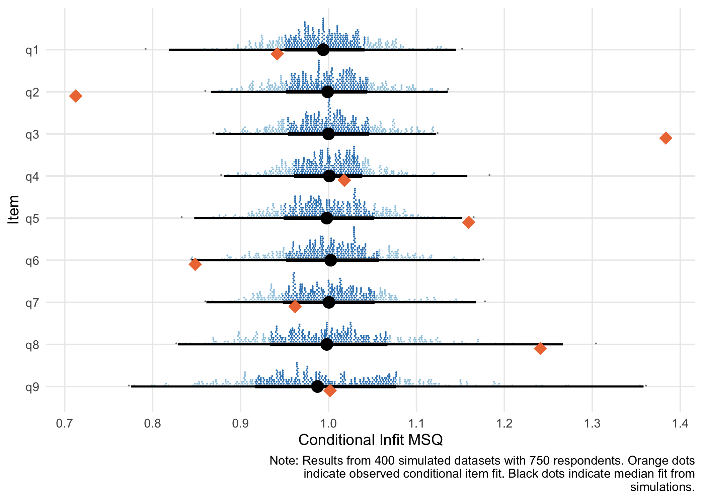
Item 2 is strongly overfit. - 2: “Feeling down, depressed, or hopeless”
Item 3 is strongly underfit, and item 5 is borderline underfit. - 3: “Trouble falling or staying asleep, or sleeping too much” - 5: “Poor appetite or overeating”
The two psychosomatic symptoms (item 3 and 5) deviate from other items, likely due to multidimensionality, while item 2 is a very general statement that is strongly related to the latent construct.
inf1 <- infit_statistic(fit, ndraws_use = 2000)
inf1post <- infit_post(inf1)
inf1post$summary# A tibble: 9 × 4
item infit_obs infit_rep infit_ppp
<chr> <dbl> <dbl> <dbl>
1 q1 0.96 1 0.813
2 q2 0.781 1.00 1
3 q3 1.27 1 0
4 q4 1.01 0.997 0.382
5 q5 1.12 1 0.003
6 q6 0.887 1.00 0.98
7 q7 0.975 1 0.695
8 q8 1.19 1.00 0.009
9 q9 0.98 0.998 0.59 inf1post$hdi# A tibble: 9 × 3
item underfit overfit
<chr> <dbl> <dbl>
1 q1 0.003 0.17
2 q2 0 0.994
3 q3 1 0
4 q4 0.076 0.017
5 q5 0.743 0
6 q6 0 0.649
7 q7 0.016 0.101
8 q8 0.672 0
9 q9 0.072 0.066inf1post$plot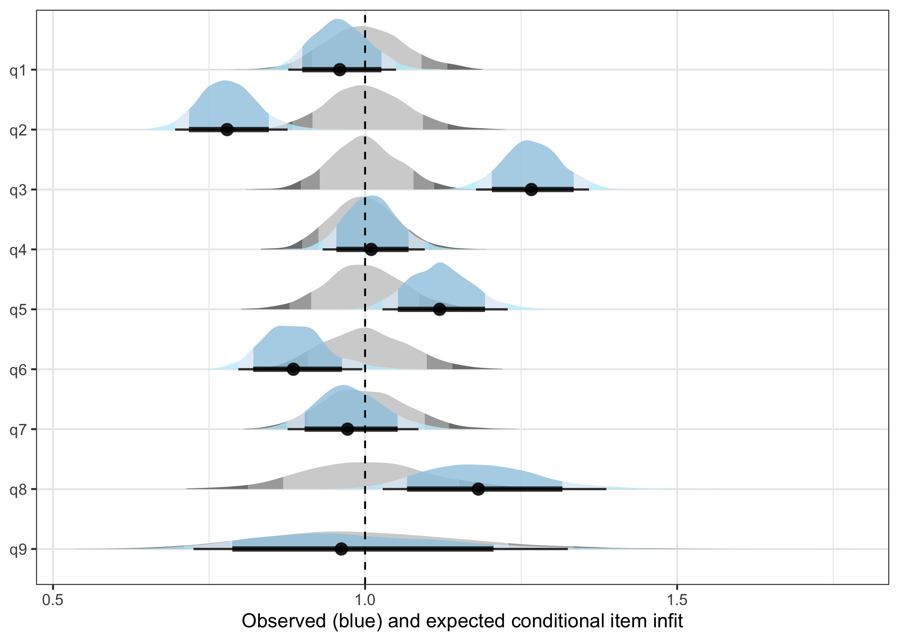
Based on ppp-values:
- item 2 is overfit
- item 3, 5, and 8 are underfit
- 8: “Moving or speaking so slowly that other people could have noticed?”
6.2 Item-restscore
Using Goodman-Kruskal’s gamma (Kreiner 2011).
RIrestscore(d)| Item | Observed value | Model expected value | Absolute difference | Adjusted p-value (BH) | Statistical significance level | Location | Relative location |
|---|---|---|---|---|---|---|---|
| q1 | 0.66 | 0.60 | 0.06 | 0.080 | . | -0.14 | 1.47 |
| q2 | 0.74 | 0.59 | 0.15 | 0.000 | *** | -0.02 | 1.59 |
| q3 | 0.46 | 0.60 | 0.14 | 0.000 | *** | -0.85 | 0.76 |
| q4 | 0.58 | 0.58 | 0.00 | 0.828 | -0.93 | 0.68 | |
| q5 | 0.54 | 0.61 | 0.07 | 0.080 | . | -0.21 | 1.40 |
| q6 | 0.69 | 0.61 | 0.08 | 0.007 | ** | -0.07 | 1.54 |
| q7 | 0.63 | 0.60 | 0.03 | 0.547 | 0.16 | 1.77 | |
| q8 | 0.64 | 0.64 | 0.00 | 0.883 | 0.68 | 2.29 | |
| q9 | 0.87 | 0.67 | 0.20 | 0.000 | *** | 1.38 | 2.99 |
- Items 2, 6 and 9 are overfit
- Item 3 is underfit.
- 3: “Trouble falling or staying asleep, or sleeping too much”
irest1 <- item_restscore_statistic(fit, ndraws_use = 2000)
irest1post <- item_restscore_post(irest1)
irest1post$summary# A tibble: 9 × 5
item gamma_obs gamma_rep gamma_diff ppp
<chr> <dbl> <dbl> <dbl> <dbl>
1 q1 0.659 0.597 0.062 0.986
2 q2 0.742 0.59 0.152 1
3 q3 0.457 0.6 -0.143 0
4 q4 0.575 0.586 -0.011 0.342
5 q5 0.543 0.605 -0.062 0.018
6 q6 0.691 0.609 0.083 0.997
7 q7 0.629 0.603 0.027 0.805
8 q8 0.644 0.636 0.009 0.583
9 q9 0.872 0.667 0.204 1 irest1post$plot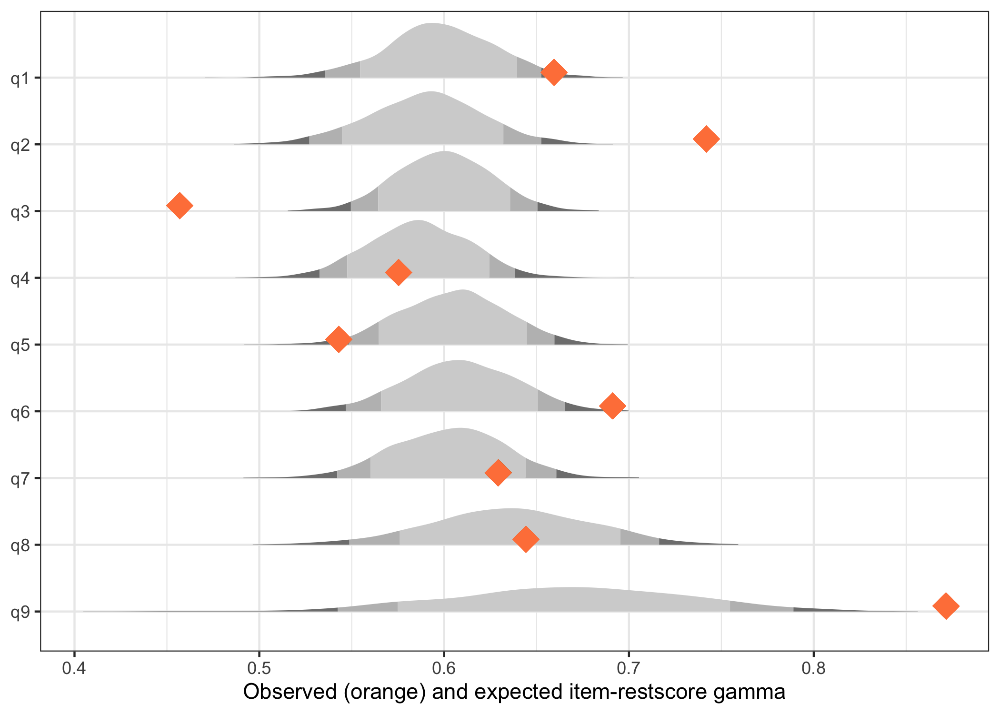
Since the observed item-restscore is non-parametric, there is no posterior distribution, only a point estimate.
Based on ppp-values:
- items 2, 6 and 9 are overfit
- items 3 and 5 underfit
- 3: “Trouble falling or staying asleep, or sleeping too much”
- 5: “Poor appetite or overeating”
6.3 Posterior Predictive Item Fit
Based on code in Bürkner (2020) and adapted for polytomous data.
# Categorical log-likelihood criterion (for polytomous models)
ll_categorical <- function(y, p) log(p)
ll_fit <- fit_statistic_pcm(fit,
criterion = ll_categorical,
ndraws_use = 1000,
group = item)
# Summarise: posterior predictive p-values per item
ll_fit %>%
group_by(item) %>%
summarise(
observed = mean(crit),
replicated = mean(crit_rep),
ppp = mean(crit_rep > crit)
)# A tibble: 9 × 4
item observed replicated ppp
<chr> <dbl> <dbl> <dbl>
1 q1 -582. -595. 0.287
2 q2 -529. -589. 0.001
3 q3 -795. -714. 1
4 q4 -731. -723. 0.64
5 q5 -634. -600. 0.92
6 q6 -525. -554. 0.102
7 q7 -532. -539. 0.391
8 q8 -342. -323. 0.788
9 q9 -151. -168. 0.249# Use ggplot2 to make a histogram
ll_fit %>%
ggplot(aes(crit_diff)) +
geom_histogram(aes(fill = ifelse(crit_diff > 0, "above","below"))) +
facet_wrap("item") +
theme_bw() +
theme(legend.position = "none")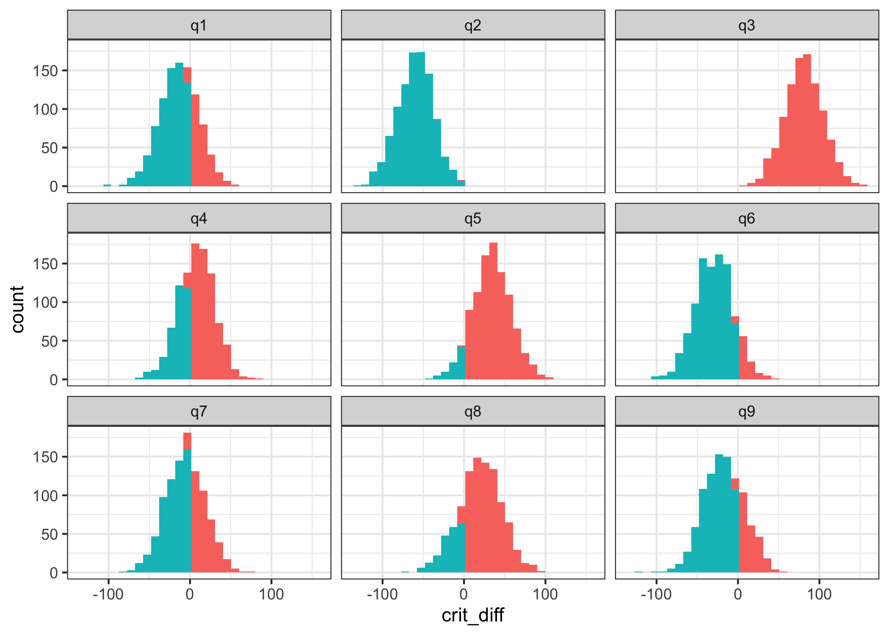
Based on ppp:
- item 2 is overfit
- item 3 is underfit, maybe also item 5
6.4 Conditional ICC
RIciccPlot(d)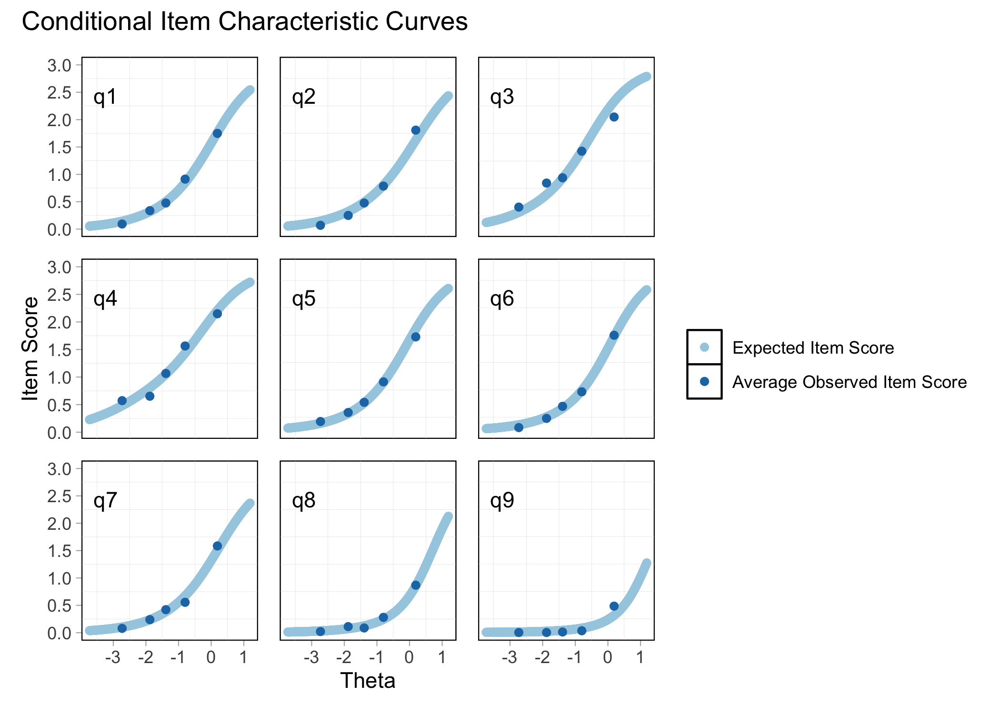
plot_icc(fit)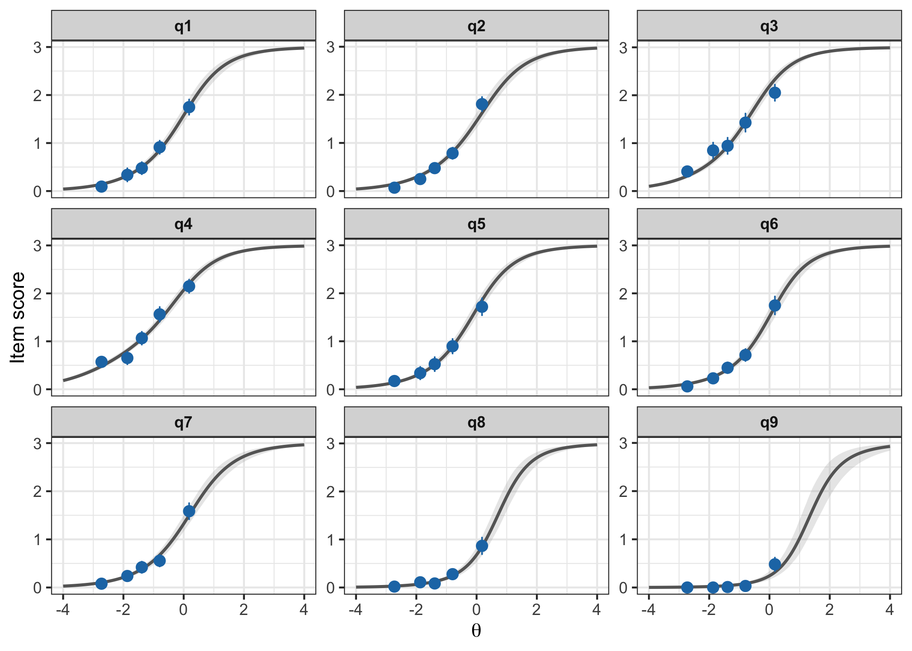
The theta values are off in the 0.2.0 CRAN version, this is fixed in the GitHub development version 0.2.0.1.
6.5 Local dependency
Using Yen’s Q3 statistic (Christensen, Makransky, and Horton 2017), again with parametric bootstrap to determine a critical value.
simcor <- RIgetResidCor(d, iterations = 1000, cpu = 8)
RIresidcorr(d, simcor$p99)| q1 | q2 | q3 | q4 | q5 | q6 | q7 | q8 | q9 | |
|---|---|---|---|---|---|---|---|---|---|
| q1 | |||||||||
| q2 | 0.19 | ||||||||
| q3 | -0.25 | -0.23 | |||||||
| q4 | -0.17 | -0.23 | -0.06 | ||||||
| q5 | -0.23 | -0.18 | -0.14 | -0.09 | |||||
| q6 | -0.03 | 0.19 | -0.25 | -0.16 | -0.16 | ||||
| q7 | -0.06 | -0.1 | -0.22 | -0.12 | -0.07 | -0.13 | |||
| q8 | -0.14 | -0.12 | -0.13 | -0.07 | -0.09 | -0.15 | -0.01 | ||
| q9 | -0.05 | 0.06 | -0.09 | -0.1 | -0.14 | 0.13 | -0.06 | -0.09 | |
| Note: | |||||||||
|
Relative cut-off value is 0.09, which is 0.189 above the average correlation (-0.099). Correlations above the cut-off are highlighted in red text. |
Based on 1000 simulations and the 99th percentile as a cutoff.
Correlated item pairs, sorted on strongest correlations
- 1 & 2
- 1: “Little interest or pleasure in doing things”
- 2: “Feeling down, depressed, or hopeless”
- 2 & 6
- 6: “Feeling bad about yourself - or that you are a failure or have let yourself or your family down”
- 6 & 9
- 9: “Thoughts that you would be better off dead or of hurting yourself in some way”
q3_1 <- q3_statistic(fit, ndraws_use = 2000)
q3_1post <- q3_post(q3_1, n_pairs = 8)
q3_1post$summary %>% head(8)# A tibble: 8 × 7
item_pair item_1 item_2 q3_obs q3_rep q3_diff q3_ppp
<chr> <chr> <chr> <dbl> <dbl> <dbl> <dbl>
1 q2 : q6 q2 q6 0.297 0.002 0.295 1
2 q1 : q2 q1 q2 0.29 -0.002 0.292 1
3 q6 : q9 q6 q9 0.174 0.001 0.173 1
4 q2 : q9 q2 q9 0.111 0 0.111 1
5 q1 : q6 q1 q6 0.097 0 0.097 1
6 q3 : q4 q3 q4 0.065 0 0.065 1
7 q7 : q8 q7 q8 0.06 -0.001 0.061 0.998
8 q1 : q7 q1 q7 0.058 0 0.058 0.999# A tibble: 8 × 5
item_pair item_1 item_2 ld lr
<chr> <chr> <chr> <dbl> <dbl>
1 q1 : q2 q1 q2 1 0
2 q2 : q6 q2 q6 1 0
3 q6 : q9 q6 q9 1 0
4 q2 : q9 q2 q9 0.974 0
5 q1 : q6 q1 q6 0.97 0
6 q3 : q4 q3 q4 0.736 0
7 q1 : q7 q1 q7 0.414 0
8 q7 : q8 q7 q8 0.246 0Item pairs most strongly correlated:
- 2 & 6
- 1 & 2
- 6 & 9
A bit less strong but still likely too much:
- 2 & 9
- 1 & 6
These seem to be clustered together.
q3_1post$plot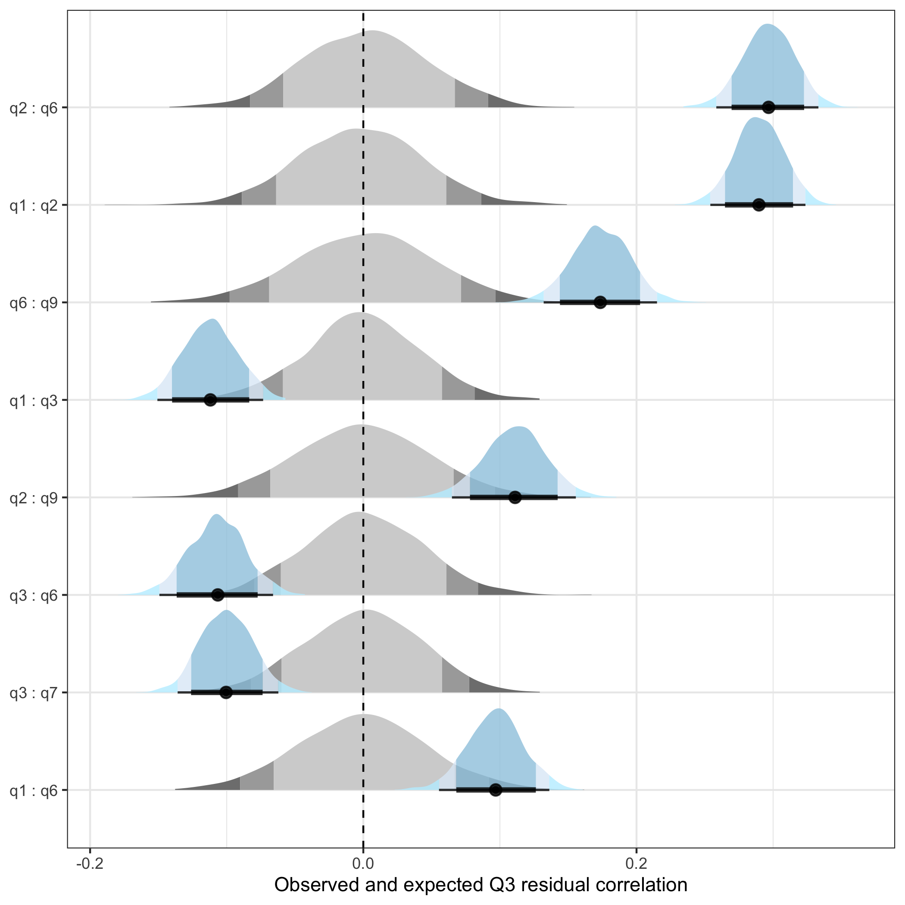
6.6 PCA of residuals
This is primarily a way to evaluate patterns in the standardized model residuals.
pca1 <- plot_residual_pca(fit, ndraws_use = 2000)
pca1$plot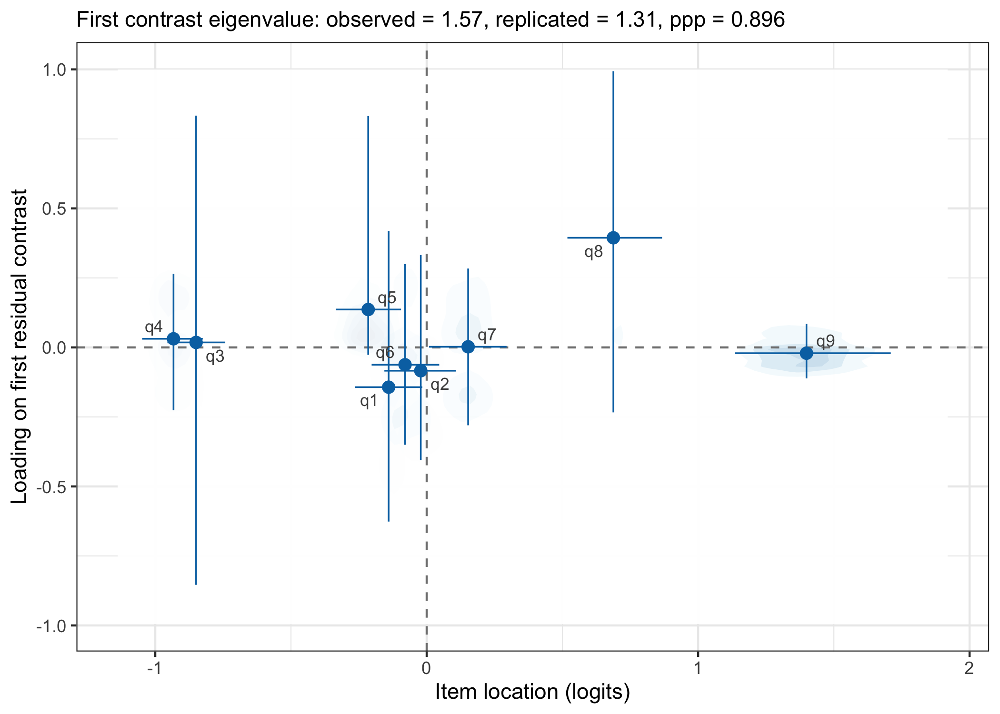
$data
# A tibble: 9 × 7
item location location_lower location_upper loading loading_lower
<chr> <dbl> <dbl> <dbl> <dbl> <dbl>
1 q1 -0.140 -0.264 -0.0161 -0.143 -0.626
2 q2 -0.0218 -0.156 0.108 -0.0838 -0.405
3 q3 -0.849 -0.955 -0.742 0.0179 -0.854
4 q4 -0.933 -1.05 -0.825 0.0310 -0.226
5 q5 -0.216 -0.335 -0.0946 0.136 -0.0266
6 q6 -0.0797 -0.203 0.0462 -0.0622 -0.350
7 q7 0.153 0.00839 0.294 0.00229 -0.280
8 q8 0.688 0.518 0.867 0.394 -0.234
9 q9 1.40 1.14 1.71 -0.0208 -0.111
# ℹ 1 more variable: loading_upper <dbl>
$eigenvalue
# A tibble: 1 × 6
eigenvalue_obs eigenvalue_rep eigenvalue_diff ppp var_explained_obs
<dbl> <dbl> <dbl> <dbl> <dbl>
1 1.57 1.31 0.263 0.896 0.176
# ℹ 1 more variable: var_explained_rep <dbl>RIpcmPCA(d, rotation = "none")| Eigenvalues | Proportion of variance |
|---|---|
| 1.66 | 19.1% |
| 1.23 | 17.1% |
| 1.15 | 15.8% |
| 1.12 | 14.4% |
| 1.09 | 12.2% |
simpca <- RIbootPCA(d, iterations = 500, cpu = 8)
simpca$p95 95%
1.35805 simpca$p99 99%
1.38401 RIloadLoc(d) +
coord_flip()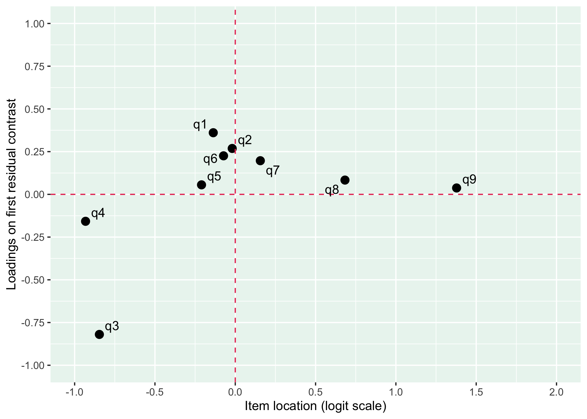
6.7 Response category probabilities
A.k.a. Item Probability Functions
6.8 Targeting
RItargeting(d, fast_thetas = T,
xlim = c(-5,3))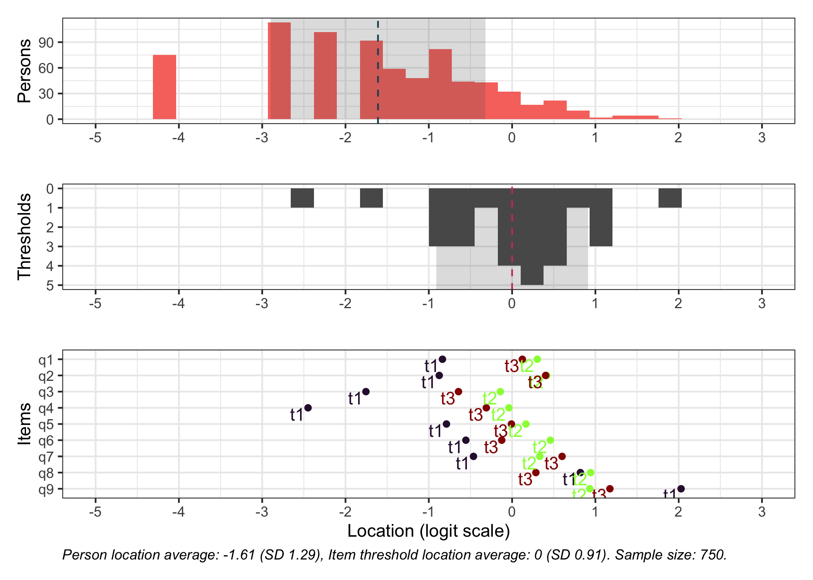
plot_targeting(fit)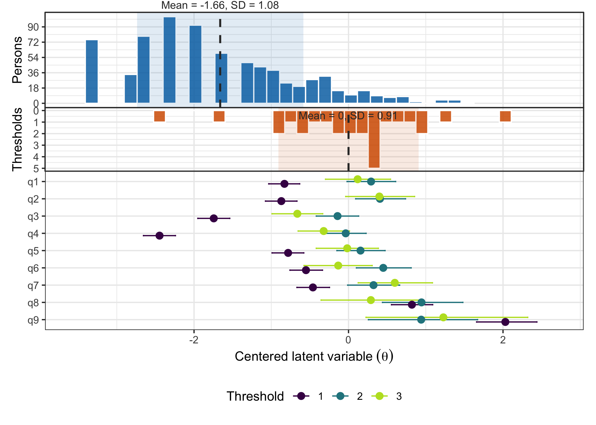
6.9 DIF
For the case of demonstration, we’ll generate a random “gender” variable.
difdata <- readRDS("data/phq9difdata.rds")
d2 <- difdata[[1]]
dl2 <- difdata[[2]]First, we need to check the response distribution for both gender categories.
RIdifTileplot(d, d2$gender)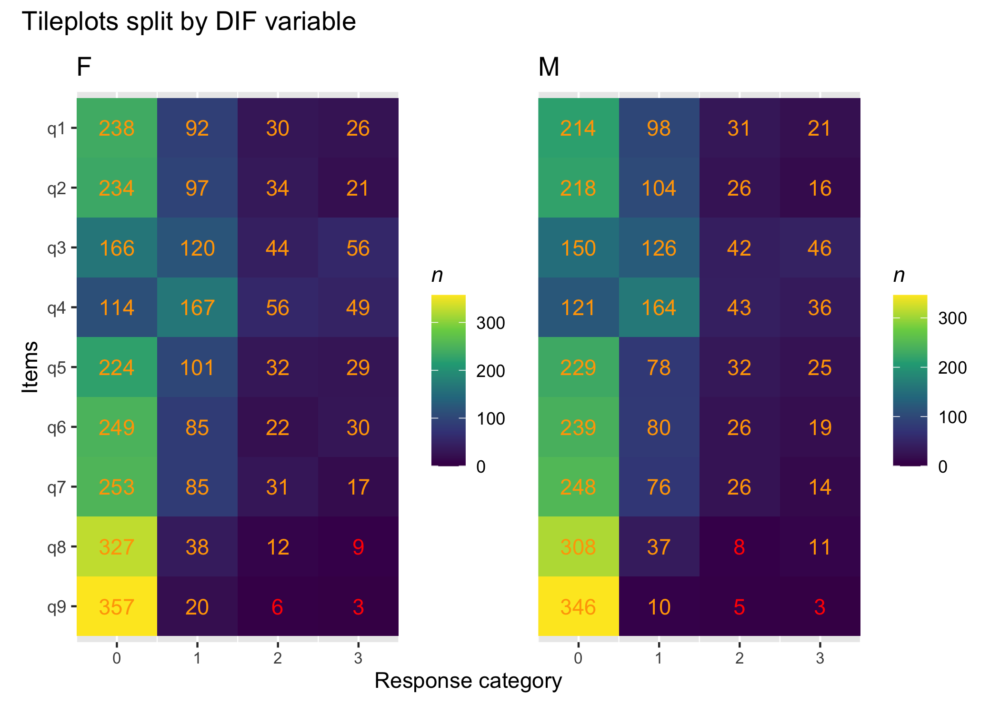
No empty cells, which is good, particularly in the lower categories.
RIdifTableLR(d, dif.var = d2$gender)Item locations |
Standard errors |
||||||
|---|---|---|---|---|---|---|---|
| Item | F | M | MaxDiff | All | SE_F | SE_M | SE_All |
| q1 | 0.015 | -0.058 | 0.073 | -0.019 | 0.212 | 0.220 | 0.152 |
| q2 | 0.089 | 0.116 | 0.027 | 0.099 | 0.211 | 0.236 | 0.157 |
| q3 | -0.696 | -0.769 | 0.073 | -0.729 | 0.180 | 0.187 | 0.130 |
| q4 | -0.88 | -0.75 | 0.13 | -0.814 | 0.174 | 0.190 | 0.128 |
| q5 | -0.093 | -0.101 | 0.008 | -0.092 | 0.205 | 0.218 | 0.149 |
| q6 | 0.006 | 0.103 | 0.097 | 0.044 | 0.226 | 0.235 | 0.161 |
| q7 | 0.258 | 0.291 | 0.033 | 0.274 | 0.223 | 0.247 | 0.165 |
| q8 | 0.845 | 0.749 | 0.096 | 0.801 | 0.324 | 0.360 | 0.239 |
| q9 | 1.401 | 1.626 | 0.225 | 1.496 | 0.474 | 0.551 | 0.357 |
| Note: | |||||||
| Values highlighted in red are above the chosen cutoff 0.5 logits. Background color brown and blue indicate the lowest and highest values among the DIF groups. | |||||||
RIdifFigureLR(d, dif.var = d2$gender)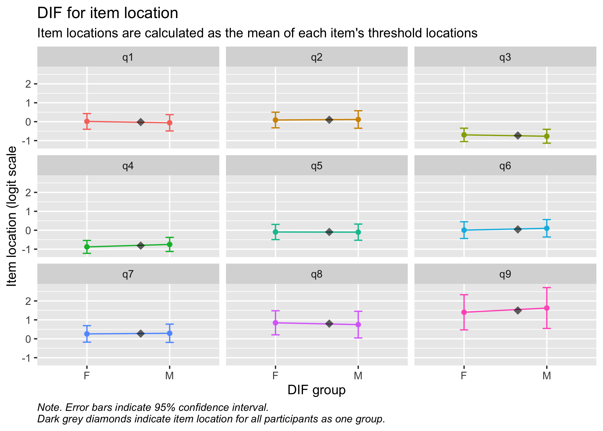
RIdifThreshFigLR(d, dif.var = d2$gender)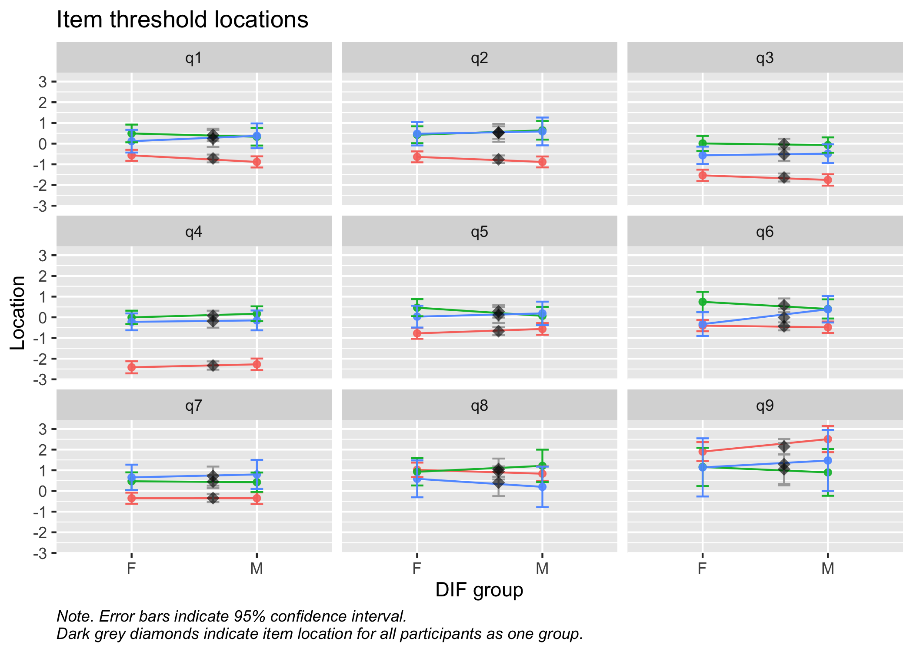
RIciccPlot(d, dif = "yes", dif_var = d2$gender)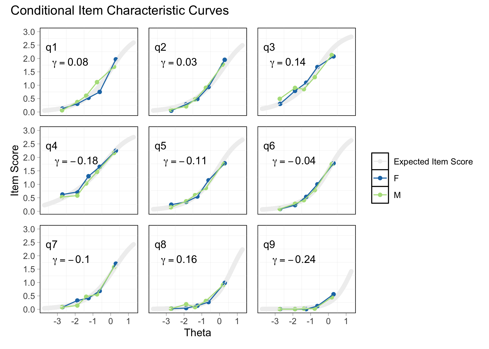
Does not require refitting the model.
plot_icc(fit,
dif_var = "gender",
dif_data = dl2)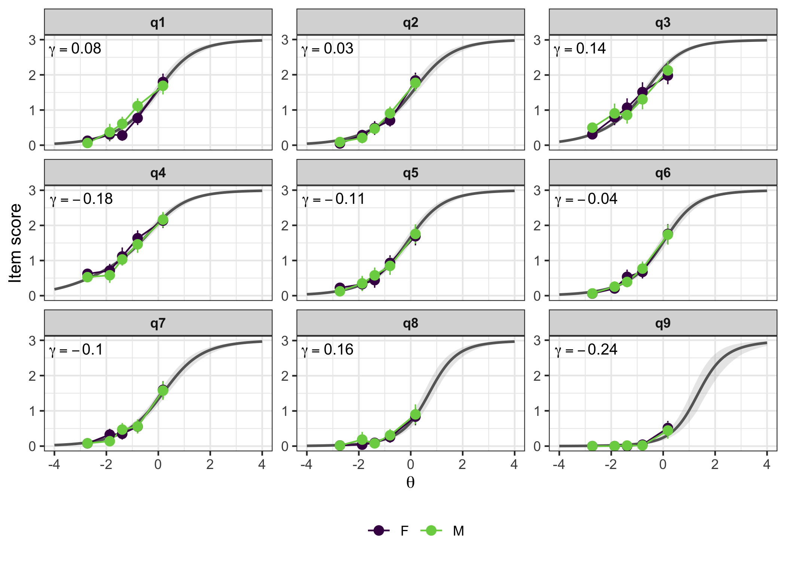
This does require refitting the model with the DIF variable included, which will take quite a bit of time. I’ll preload the one below, since it took almost 30 minutes on 4 cores.
phq9_dif_gender <- dif_statistic(fit, group_var = "gender", data = dl2)
saveRDS(phq9_dif_gender, "data/phq9_dif_gender_fit.rds")You can also use dif_statistic() to just output a formula for brms and refit the model manually.
dif_statistic(fit, group_var = "gender", data = dl2, refit = FALSE)$summary
NULL
$dif_draws
NULL
$dif_model
NULL
$dif_formula
response | thres(gr = item) ~ 1 + (1 | id) + gender:item
$baseline_model
Family: acat
Links: mu = logit
Formula: response | thres(gr = item) ~ 1 + (1 | id)
Data: dl (Number of observations: 6750)
Draws: 4 chains, each with iter = 4000; warmup = 1500; thin = 1;
total post-warmup draws = 10000
Multilevel Hyperparameters:
~id (Number of levels: 750)
Estimate Est.Error l-95% CI u-95% CI Rhat Bulk_ESS Tail_ESS
sd(Intercept) 1.22 0.05 1.12 1.32 1.00 2065 3621
Regression Coefficients:
Estimate Est.Error l-95% CI u-95% CI Rhat Bulk_ESS Tail_ESS
Intercept[q1,1] 0.82 0.10 0.62 1.02 1.00 4323 6517
Intercept[q1,2] 1.94 0.16 1.63 2.26 1.00 5810 7128
Intercept[q1,3] 1.77 0.22 1.35 2.19 1.00 7731 7474
Intercept[q2,1] 0.78 0.10 0.57 0.98 1.00 4524 6036
Intercept[q2,2] 2.06 0.16 1.74 2.39 1.00 6146 7100
Intercept[q2,3] 2.05 0.23 1.61 2.51 1.00 7793 7516
Intercept[q3,1] -0.09 0.11 -0.30 0.11 1.00 4710 6190
Intercept[q3,2] 1.51 0.14 1.23 1.78 1.00 5170 7020
Intercept[q3,3] 0.99 0.17 0.66 1.32 1.00 6108 7198
Intercept[q4,1] -0.80 0.11 -1.00 -0.59 1.00 5021 6854
Intercept[q4,2] 1.61 0.13 1.36 1.88 1.00 5418 5959
Intercept[q4,3] 1.33 0.17 1.00 1.66 1.00 5835 6915
Intercept[q5,1] 0.87 0.11 0.66 1.07 1.00 4818 6244
Intercept[q5,2] 1.81 0.16 1.50 2.12 1.00 5973 7352
Intercept[q5,3] 1.63 0.21 1.23 2.04 1.00 7603 7620
Intercept[q6,1] 1.10 0.11 0.89 1.31 1.00 4923 6316
Intercept[q6,2] 2.10 0.18 1.75 2.46 1.00 6420 7535
Intercept[q6,3] 1.52 0.23 1.07 1.96 1.00 7760 7072
Intercept[q7,1] 1.19 0.11 0.98 1.40 1.00 4709 5983
Intercept[q7,2] 1.97 0.17 1.64 2.31 1.00 6764 6924
Intercept[q7,3] 2.25 0.24 1.78 2.74 1.00 7957 6948
Intercept[q8,1] 2.47 0.14 2.21 2.74 1.00 5012 6183
Intercept[q8,2] 2.60 0.27 2.09 3.13 1.00 7457 7318
Intercept[q8,3] 1.94 0.33 1.30 2.61 1.00 7689 7316
Intercept[q9,1] 3.68 0.20 3.31 4.09 1.00 7203 7379
Intercept[q9,2] 2.59 0.36 1.91 3.32 1.00 7234 7018
Intercept[q9,3] 2.88 0.54 1.88 3.97 1.00 8877 7277
Further Distributional Parameters:
Estimate Est.Error l-95% CI u-95% CI Rhat Bulk_ESS Tail_ESS
disc 1.00 0.00 1.00 1.00 NA NA NA
Draws were sampled using sampling(NUTS). For each parameter, Bulk_ESS
and Tail_ESS are effective sample size measures, and Rhat is the potential
scale reduction factor on split chains (at convergence, Rhat = 1).
$plot
NULLFor polytomous models, it is often also of interest to review the potential effect of DIF on individual threshold locations, which can be done with dif_type = "non-uniform".
| item | dif_estimate | dif_sd | dif_lower | dif_upper | pd | rope_percentage | flag |
|---|---|---|---|---|---|---|---|
| q1 | -1.4846677 | 1.718012 | -4.862511 | 1.9213643 | 0.8092 | 0.1533 | Inconclusive |
| q2 | -1.6785010 | 1.750830 | -5.104834 | 1.7283809 | 0.8322 | 0.1426 | Inconclusive |
| q3 | -0.8570800 | 1.759725 | -4.356726 | 2.5547662 | 0.6852 | 0.2047 | Inconclusive |
| q4 | -0.8698661 | 1.748307 | -4.268959 | 2.4530867 | 0.6894 | 0.2055 | Inconclusive |
| q5 | -1.4727613 | 1.755595 | -4.883501 | 1.9926160 | 0.8026 | 0.1593 | Inconclusive |
| q6 | -1.5902585 | 1.772406 | -5.015850 | 1.8983073 | 0.8165 | 0.1468 | Inconclusive |
| q7 | -1.8656254 | 1.719208 | -5.242316 | 1.4421569 | 0.8607 | 0.1319 | Inconclusive |
| q8 | -2.3197795 | 1.709899 | -5.660178 | 1.0559836 | 0.9087 | 0.0921 | Inconclusive |
| q9 | -3.3026390 | 1.753691 | -6.725325 | 0.1993221 | 0.9678 | 0.0405 | Inconclusive |
phq9_dif_gender$plot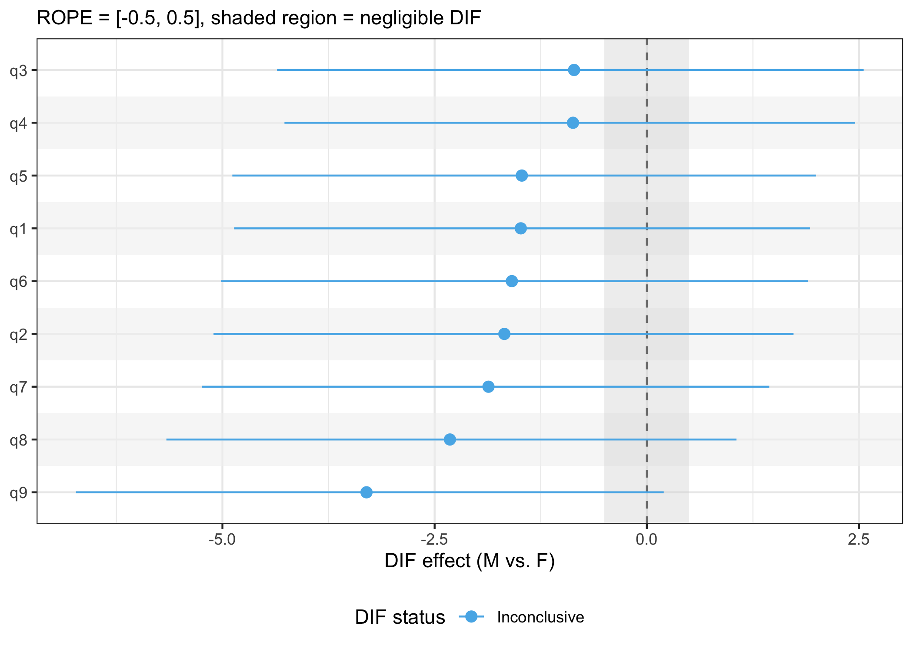
7 Summary
These PHQ-9 data clearly have several significant psychometric weaknesses. Several items show strong misfit to the measurement model, residual correlations, and disordered item category threshold locations. A next step in the analysis process would be to remove one or two misfitting items, in this data items 3 (underfit) and 2 (overfit and having residual correlations), and run a new model. Since this is intended primarily as a demonstration of the functions available in easyRaschBayes, I’ll leave the continued analysis to the curious reader.
References
Bürkner, Paul-Christian. 2020. “Analysing Standard Progressive Matrices (SPM-LS) with Bayesian Item Response Models.” Journal of Intelligence 8 (1). https://doi.org/10.3390/jintelligence8010005.
Christensen, Karl Bang, Guido Makransky, and Mike Horton. 2017. “Critical Values for Yen’s Q3: Identification of Local Dependence in the Rasch Model Using Residual Correlations.” Applied Psychological Measurement 41 (3): 178–94. https://doi.org/10.1177/0146621616677520.
Johansson, Magnus. 2025. “Detecting Item Misfit in Rasch Models.” Educational Methods & Psychometrics 3 (18). https://doi.org/10.61186/emp.2025.5.
Kreiner, Svend. 2011. “A Note on Item–Restscore Association in Rasch Models.” Applied Psychological Measurement 35 (7): 557–61. https://doi.org/10.1177/0146621611410227.
Kruschke, John K. 2018. “Rejecting or Accepting Parameter Values in Bayesian Estimation.” Advances in Methods and Practices in Psychological Science 1 (2): 270–80. https://doi.org/10.1177/2515245918771304.
Müller, Marianne. 2020. “Item Fit Statistics for Rasch Analysis: Can We Trust Them?” Journal of Statistical Distributions and Applications 7 (1): 5. https://doi.org/10.1186/s40488-020-00108-7.
Säilynoja, Teemu, Andrew R. Johnson, Osvaldo A. Martin, and Aki Vehtari. 2025. “Recommendations for Visual Predictive Checks in Bayesian Workflow.” arXiv. https://doi.org/10.48550/arXiv.2503.01509.
Reuse
Citation
BibTeX citation:
@online{johansson2026,
author = {Johansson, Magnus},
title = {Rasch Analysis with {Bayesian} and Frequentist Methods},
date = {2026-03-31},
url = {https://pgmj.github.io/rasch_bayes_comp.html},
langid = {en}
}
For attribution, please cite this work as:
Johansson, Magnus. 2026. “Rasch Analysis with Bayesian and
Frequentist Methods.” March 31, 2026. https://pgmj.github.io/rasch_bayes_comp.html.